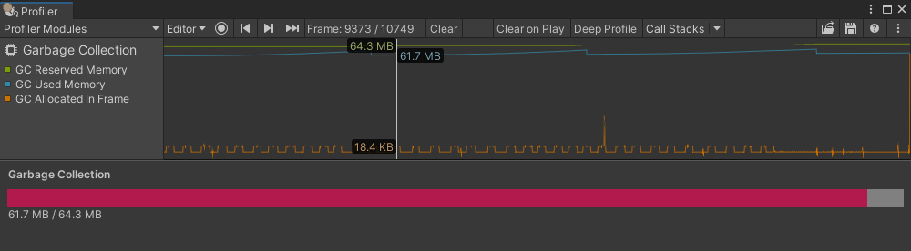

Provides a single view of content for a ProfilerModule displayed in the Profiler window.
Use this class to perform a custom drawing in a ProfilerModule, such as drawing a custom Details View.
To build the module's view hierarchy, define a ProfilerModuleViewController derived type and override its ProfilerModuleViewController.CreateView method.
To do any necessary clean up of the view controller, override the ProfilerModuleViewController.Dispose method.
You do not need to explicitly remove the view controller’s view from the hierarchy as part of the Dispose process; Unity does this automatically when it disposes the view controller.
To use the ProfilerModuleViewController derived type, instantiate a new instance of it when asked, such as in ProfilerModule.CreateDetailsViewController.
.
using System; using Unity.Profiling; using Unity.Profiling.Editor; using UnityEditor; using UnityEngine.UIElements;
//--Module--
[Serializable] [ProfilerModuleMetadata("Garbage Collection")] public class GarbageCollectionProfilerModule : ProfilerModule { static readonly ProfilerCounterDescriptor[] k_ChartCounters = new ProfilerCounterDescriptor[] { new ProfilerCounterDescriptor("GC Reserved Memory", ProfilerCategory.Memory), new ProfilerCounterDescriptor("GC Used Memory", ProfilerCategory.Memory), new ProfilerCounterDescriptor("GC Allocated In Frame", ProfilerCategory.Memory), };
// Specify a list of Profiler category names, which should be auto-enabled when the module is active. static readonly string[] k_AutoEnabledCategoryNames = new string[] { ProfilerCategory.Memory.Name, };
public GarbageCollectionProfilerModule() : base(k_ChartCounters, autoEnabledCategoryNames: k_AutoEnabledCategoryNames) { }
public override ProfilerModuleViewController CreateDetailsViewController() { return new GarbageCollectionDetailsViewController(ProfilerWindow); } }
//--Module Custom Drawing--
public class GarbageCollectionDetailsViewController : ProfilerModuleViewController { const string k_UxmlResourceName = "Assets/Editor/GarbageCollectionDetailsView.uxml"; const string k_UxmlElementId_GarbageCollectionDetailsViewBarFill = "garbage-collection-details-viewbar-fill"; const string k_UxmlElementId_GarbageCollectionDetailsViewBarLabel = "garbage-collection-details-viewbar-label";
static readonly ProfilerCounterDescriptor k_GcReservedMemoryCounterDescriptor = new ProfilerCounterDescriptor("GC Reserved Memory", ProfilerCategory.Memory); static readonly ProfilerCounterDescriptor k_GcUsedMemoryCounterDescriptor = new ProfilerCounterDescriptor("GC Used Memory", ProfilerCategory.Memory);
VisualElement m_BarFill; Label m_BarLabel;
public GarbageCollectionDetailsViewController(ProfilerWindow profilerWindow) : base(profilerWindow) { }
protected override VisualElement CreateView() { var template = AssetDatabase.LoadAssetAtPath<VisualTreeAsset>(k_UxmlResourceName); var view = template.Instantiate();
m_BarFill = view.Q<VisualElement>(name: k_UxmlElementId_GarbageCollectionDetailsView__BarFill); m_BarLabel = view.Q<Label>(name: k_UxmlElementId_GarbageCollectionDetailsView__BarLabel);
ReloadData(ProfilerWindow.selectedFrameIndex); ProfilerWindow.SelectedFrameIndexChanged += OnSelectedFrameIndexChanged;
return view; }
protected override void Dispose(bool disposing) { if (!disposing) return;
ProfilerWindow.SelectedFrameIndexChanged -= OnSelectedFrameIndexChanged; base.Dispose(disposing); }
void OnSelectedFrameIndexChanged(long selectedFrameIndex) { ReloadData(selectedFrameIndex); }
void ReloadData(long selectedFrameIndex) { long gcReservedBytes = 0; long gcUsedBytes = 0;
var selectedFrameIndexInt32 = Convert.ToInt32(selectedFrameIndex); using (var frameData = UnityEditorInternal.ProfilerDriver.GetRawFrameDataView(selectedFrameIndexInt32, 0)) { if (frameData == null || !frameData.valid) return;
var gcReservedBytesMarkerId = frameData.GetMarkerId(k_GcReservedMemoryCounterDescriptor.Name); gcReservedBytes = frameData.GetCounterValueAsLong(gcReservedBytesMarkerId);
var gcUsedBytesMarkerId = frameData.GetMarkerId(k_GcUsedMemoryCounterDescriptor.Name); gcUsedBytes = frameData.GetCounterValueAsLong(gcUsedBytesMarkerId); }
float gcUsedBytesScalar = (float)gcUsedBytes / gcReservedBytes; m_BarFill.style.width = new Length(gcUsedBytesScalar * 100, LengthUnit.Percent); m_BarLabel.text = $"{EditorUtility.FormatBytes(gcUsedBytes)} / {EditorUtility.FormatBytes(gcReservedBytes)}"; } }
//--Assets/Editor/GarbageCollectionDetailsView.uxml--
<?xml version="1.0" encoding="utf-8"?> <engine:UXML xmlns:xsi="http://www.w3.org/2001/XMLSchema-instance" xmlns:engine="UnityEngine.UIElements" xmlns:editor="UnityEditor.UIElements" xsi:noNamespaceSchemaLocation="../../UIElementsSchema/UIElements.xsd"> <engine:Style src="GarbageCollectionDetailsView.uss"/> <engine:VisualElement name="garbage-collection-details-view"> <engine:Label name="garbage-collection-details-viewtitle-label" text="Garbage Collection"/> <engine:VisualElement name="garbage-collection-details-viewbar"> <engine:VisualElement name="garbage-collection-details-viewbar-fill"/> </engine:VisualElement> <engine:Label name="garbage-collection-details-viewbar-label"/> </engine:VisualElement> </engine:UXML>
//--Assets/Editor/GarbageCollectionDetailsView.uss--
#garbage-collection-details-view { flex-grow: 1; margin: 8px; }
#garbage-collection-details-view__title-label { -unity-font-style: bold; margin-bottom: 8px; }
#garbage-collection-details-view__bar { background-color: gray; flex-direction: row; height: 20px; }
#garbage-collection-details-view__bar-fill { background-color: #B2194C; position: absolute; height: 100%; }
| ProfilerWindow | The Profiler window that the view controller belongs to. |
| Dispose | Disposes the view controller. Unity calls this method automatically when the view controller is no longer required, and its view will be removed from the window hierarchy. |
| CreateView | Creates the view controller’s view. Unity calls this method automatically when it is about to display the view controller’s view for the first time. |